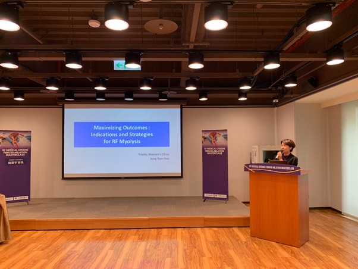

Trinity Experts
대표원장 2인 소개
화려한 이력서보다 확실한 증명은 현장에 있습니다.
수천 건의 시술 경험을 보유한 두 명의 마스터가 직접 집도합니다.

Master Surgeon
Aesthetic Design
Scar-less
Representative Director
Dr. 정난희
"진심과 이해를 담아 당신의 이야기를 경청하고, 여성의 마음으로 섬세하게 진료하겠습니다."
Major Careers
- IFAAS (국제피부미용학회) 비수술여성성형부 교수
- 대한산부인과의사회 학술이사 / 하이푸연구회 총무이사
- 몽골/대만 RFA(고주파 절제술) 마스터 클래스 진행
- 방송: TV조선 <유레카>, 채널A 등 여성건강 자문

Menopause Expert
High-Tech Pioneer
Customized Care
Representative Director
Dr. 양기열
"수만 건의 임상 경험으로 증명된 실력, 결과의 차이를 만듭니다."
Major Careers
- 경희대학교 의과대학 외래교수 / 산부인과 전문의
- 대한폐경학회 폐경 전문 과정 이수 (인증의)
- 저서: <갱년기에 대해 의사가 가장 많이 듣는 질문>
- 방송: TvN <슈퍼푸드>, MBN <특집다큐> 자궁근종 자문



의사를 가르치는 마스터클래스
국내외 산부인과 전문의들에게 독자적인 시술 프로토콜 전수.


강연 및 외부활동
여성건강 출판 및 강연활동


국제적인 의료 교류
세계적 수준의 의료 교류

Deep Consultation
어려운 의학 용어 대신, 쉬운 언어로
내 몸의 상태가 어떤지 완벽히 이해할 때까지 설명합니다.

실시간 초음파 상담
화면을 보며 직접 확인

치료 후 관리
퇴원 전까지 세심한 케어